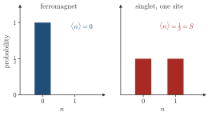
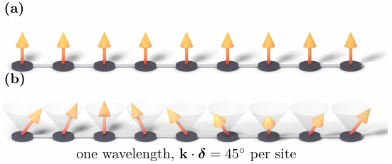

Advanced Quantum Materials 2027 · All lectures · Lecture notes
Session 8. Quantum Magnetism, Spinons and Kondo Physics
8.7 Why the Holstein-Primakoff magnon approach fails for QSL excitations
It is hard to write the exact QSL ground state, so the natural next step, as in Session 6, is to ask about the excitations on top of the ground state, and not about the ground state itself. Up to now, the only tool that we have for this is the Holstein-Primakoff transformation, which writes
\[S_i^z = S - a_i^\dagger a_i, \qquad S_i^+ \approx \sqrt{2S}\,a_i, \qquad S_i^- \approx \sqrt{2S}\,a_i^\dagger, \tag{8.8}\]
where we linearized under the assumption that the number of bosonic magnons is small, \(\langle a_i^\dagger a_i\rangle \ll S\). This is a very good approximation close to a fully or nearly polarized magnet, which is the regime where we used it in Session 6.
A QSL is in the opposite limit. Its defining property, \(\langle \mathbf S_i\rangle = 0\) on every site, gives through (8.8)
\[\langle a_i^\dagger a_i \rangle = S, \tag{8.9}\]
which is the regime where the condition of a small boson density, the basis of the linearized Holstein-Primakoff mapping, fails completely. For a QSL there is no ordered reference state that it is “close to” and around which we can expand. As a result, the magnon method that worked for the ordered magnets of Session 6 is not the right tool here, and we need a different approximation for the excitations of a quantum spin liquid. Schematic 8.3 shows the counting for one site.


In a QSL we have \(\langle S^z_i\rangle=0\) with \(S=1/2\). What does (8.8) give for \(\langle a_i^\dagger a_i\rangle\)?
Show the answers
- A. ✗ False
This is false. If \(\langle a_i^\dagger a_i\rangle\) were zero then \(\langle S^z_i\rangle=S-0=1/2\), which is the ferromagnet. A zero magnetization requires a finite number of bosons.
- B. ✓ True
This is true. From \(S^z_i=S-a_i^\dagger a_i\) in (8.8) and a zero expectation value we find \(\langle a_i^\dagger a_i\rangle=S\). The linearization needs this number to be small compared with \(S\), so it fails.
- C. ✗ False
This is false. If \(\langle a_i^\dagger a_i\rangle=0.05\) then \(\langle S^z_i\rangle=0.45\), which is nearly a full moment and not a zero one. A zero magnetization needs the value \(S\).
Notebook check-in: session8.ipynb, “Magnetization of a large Heisenberg model” (Core)
Diagonalize a quantum Heisenberg chain of moderate size and check numerically that the local magnetization stays zero on every site. This also holds with a small external field, as long as the field is weaker than the finite-size gap to the neighboring sector of total spin. This is how the defining property behind (8.5) and (8.9) appears in a numerical calculation.
8.8 The parton construction with Abrikosov fermions and the single-occupancy constraint
The construction that allows us to treat QSL excitations does not write each spin as a bosonic fluctuation around an ordered reference state. Instead, it writes each spin with an auxiliary fermion field \(f_{i\sigma}\) (\(\sigma=\uparrow,\downarrow\)) on every site. This is a particle with spin \(1/2\) and no electric charge, which is the spinon of Section 8.2, now written in a formal way. These particles are called Abrikosov fermions, and the operator identity that defines the parton transformation is
\[\mathbf S_i = \frac12 \sum_{\alpha\beta} f_{i\alpha}^\dagger\, \boldsymbol\sigma_{\alpha\beta}\, f_{i\beta}, \tag{8.10}\]
where \(\boldsymbol\sigma\) is the vector of Pauli matrices. One can check directly, from the anticommutation relations of the fermions, that (8.10) gives the correct \(SU(2)\) spin algebra \([S_i^a,S_i^b] = i\varepsilon^{abc}S_i^c\) on the full Fock space of \(f_{i\uparrow},f_{i\downarrow}\), which has four states, namely empty, singly occupied with spin up, singly occupied with spin down and doubly occupied. No extra input is needed for this. The problem is that this transformation makes the local Hilbert space artificially larger, since a physical spin-\(1/2\) has only two states, while \(f_{i\uparrow},f_{i\downarrow}\) give four. We remove the two extra unphysical states, which are the empty and the doubly occupied ones and which (8.10) maps to \(\mathbf S_i=0\) in any case. We do this by imposing by hand the single-occupancy constraint
\[\sum_\sigma f_{i\sigma}^\dagger f_{i\sigma} = 1 \qquad \text{at every site } i. \tag{8.11}\]
This is the fermionic analogue of the Gutzwiller projection (8.7) that we applied before to the many-body wavefunction. To project the many-body state onto the singly-occupied subspace and to fix the fermion filling to one per site are the same statement, the first one seen from the side of the wavefunction and the second one from the side of the operators. Figure 8.4a shows which two states the constraint has to remove, and why they were never spin states in the first place.
When (8.11) holds, (8.10) is an exact way to write a spin-\(1/2\) operator in the language of fermions, and we can put it directly into the Heisenberg Hamiltonian \(\mathcal H=\sum_{\langle ij\rangle}J_{ij}\,\mathbf S_i\cdot\mathbf S_j\). With the Fierz identity for Pauli matrices \(\sum_a \sigma^a_{\alpha\beta}\sigma^a_{\gamma\delta} = 2\delta_{\alpha\delta}\delta_{\beta\gamma} - \delta_{\alpha\beta}\delta_{\gamma\delta}\) and the constraint (8.11) on both sites, we obtain the simple identity
\[\mathbf S_i \cdot \mathbf S_j = \frac14 - \frac12\, \chi_{ij}^\dagger \chi_{ij}, \qquad \chi_{ij} \equiv \sum_\sigma f_{i\sigma}^\dagger f_{j\sigma}, \tag{8.12}\]
where \(\chi_{ij}\) is the spinon bond operator, or hopping operator, between sites \(i\) and \(j\). When we insert (8.12), the original Heisenberg Hamiltonian, which is bilinear in the spins, becomes a Hamiltonian that is quartic in the auxiliary fermions,
\[\mathcal H = \sum_{\langle ij\rangle} J_{ij}\left(\frac14 - \frac12\,\chi_{ij}^\dagger\chi_{ij}\right) = \text{const} - \frac12\sum_{\langle ij\rangle} J_{ij}\, \chi_{ij}^\dagger \chi_{ij}. \tag{8.13}\]
This is the same problem that we had in Sessions 1 and 6 with the Hubbard interaction, which is a quartic term that we cannot diagonalize directly. We treat it in the same way, with a mean-field decoupling,
\[\chi_{ij}^\dagger\chi_{ij} \;\approx\; \langle\chi_{ij}^\dagger\rangle\,\chi_{ij} + \chi_{ij}^\dagger\,\langle\chi_{ij}\rangle - |\langle\chi_{ij}\rangle|^2. \tag{8.14}\]

For a bond with a singlet we have \(\mathbf S_i\cdot\mathbf S_j=-3/4\). What does (8.12) give for \(\chi_{ij}^\dagger\chi_{ij}\)?
Show the answers
- A. ✗ False
This is false. This is the value for a triplet, since \(2(\tfrac14-\tfrac14)=0\) with \(\mathbf S_i\cdot\mathbf S_j=+1/4\). Our bond has \(-3/4\).
- B. ✗ False
This is false. This needs \(\mathbf S_i\cdot\mathbf S_j=-1/4\), which is not an eigenvalue of two spin-1/2. The only values are \(-3/4\) and \(+1/4\).
- C. ✓ True
This is true. From (8.12) we have \(\chi^\dagger\chi=2(\tfrac14-\mathbf S_i\cdot\mathbf S_j)=2\) for the singlet. For a triplet it is \(0\), so the bond operator measures how much singlet there is on the bond.
Try it. Compute the magnetization of the antiferromagnetic chain with the small field Bz=-0.01. It should vanish on every site, as (8.9) requires. Increase the field until a finite magnetization appears, and compare it with the finite-size gap to the next sector of total spin.